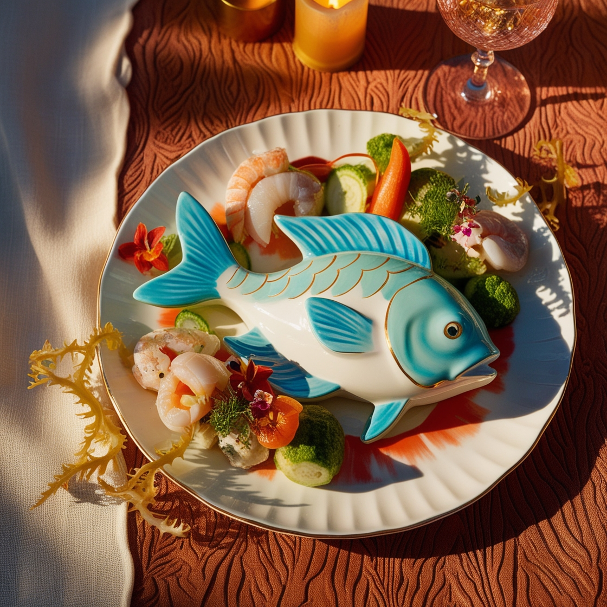

.jpg)
Producto fresco y local

Ambiente cálido y moderno

Conscientes con el medio ambiente y la ecología australiana
Producto fresco y local
Ambiente cálido y moderno
Conscientes con el medio ambiente y la ecología australiana
Venta de pescado fresco
Restaurante de excelente calidad
.png)
Servicio a domicilio
Conciencia y labor medioambiental

En nuestro restaurante, nos enorgullecemos de ofrecer una selección de platos de pescado que son simplemente inigualables. Cada creación es una obra maestra culinaria, elaborada con los ingredientes más frescos y de la más alta calidad. Nuestros chefs expertos combinan técnicas tradicionales y modernas para resaltar los sabores naturales del pescado, resultando en platos que deleitan y sorprenden a nuestros comensales. Desde el exquisito ceviche de pescado fresco hasta el suculento filete de salmón a la parrilla, cada bocado es una celebración de la excelencia gastronómica. Ven y descubre por qué somos el destino preferido para los amantes del pescado.
En nuestro restaurante, la frescura del pescado es nuestra máxima prioridad y el fundamento de nuestra reputación. Nos abastecemos diariamente de proveedores locales y de confianza, garantizando que cada pieza de pescado llegue a tu mesa en su punto óptimo de frescura. Desde la captura hasta la cocina, mantenemos los más altos estándares de conservación y manejo para asegurar que cada plato no solo cumpla, sino que supere las expectativas de nuestros comensales. Nuestro compromiso con la frescura se refleja en el sabor excepcional y la textura impecable de cada uno de nuestros platos de pescado, haciendo de cada comida una experiencia verdaderamente memorable.

Código y diseño © Carmen Fuentes Parras
Imágenes © Freepik
2024
Todos lo derechos reservados.